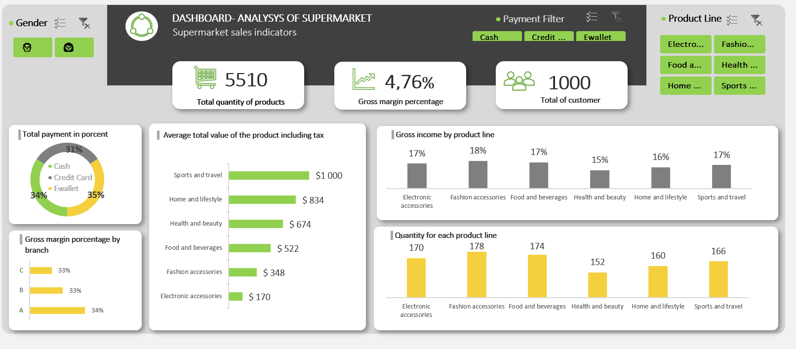
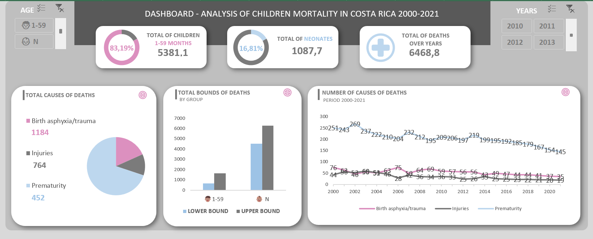
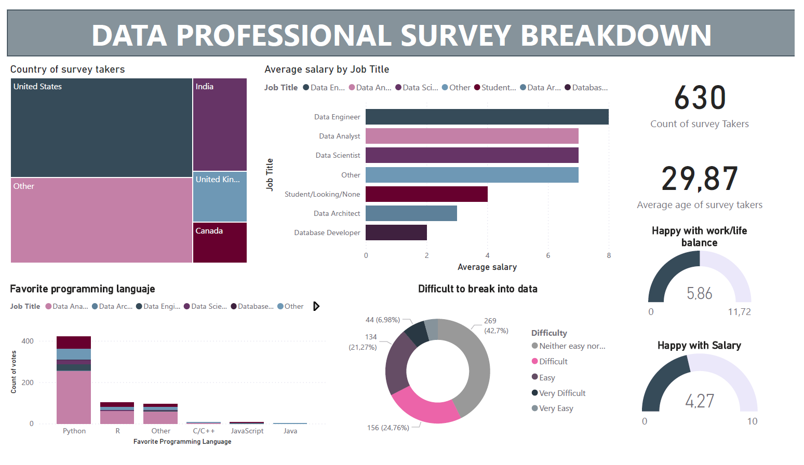
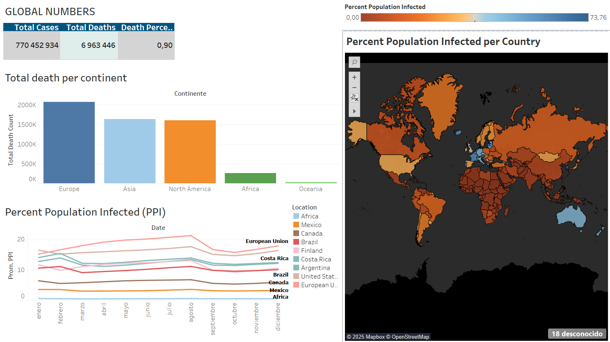

DASHBOARD

This section shows the images of the dashboards elaborated in Excel, Power BI and Tableau, as well as a small fragment of the data used,the information that was used to work in Tableau was previously analyzed in SQL.
This section shows the images of the dashboards elaborated in Excel, Power BI and Tableau, as well as a small fragment of the data used,the information that was used to work in Tableau was previously analyzed in SQL.
Dashboards of supermarket sales and infant mortality in Costa Rica are shown for the period 2000-2021, the data is compiled from INEC.
A dashboard shows the number of products, the growth margin, the total number of consumers and the products with the highest sales in the supermarket, as well as the data analyzed.

This dashboard shows the number of children, neonates and total deaths over the years, as well as the causes of deaths from asphyxia/trauma, injuries and prematurity.

Two projects were analyzed related to:
The mental health of young people and adolescents is analyzed, as well as the diseases: Depression, Anxiety and Panic attack.


The different professions are analyzed along with programming languages, the balance they have with professional life, the established salary and the countries surveyed.

Covid-19 disease is analyzed throughout the continents and different Latin American countries, as well as the number of infections and the total number of deaths.
